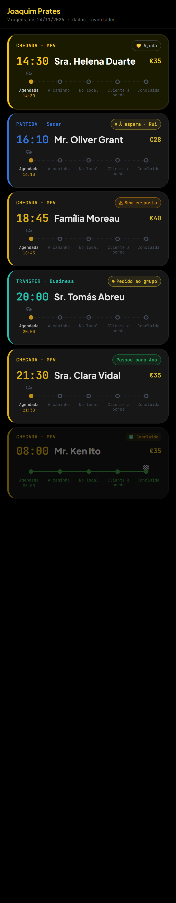
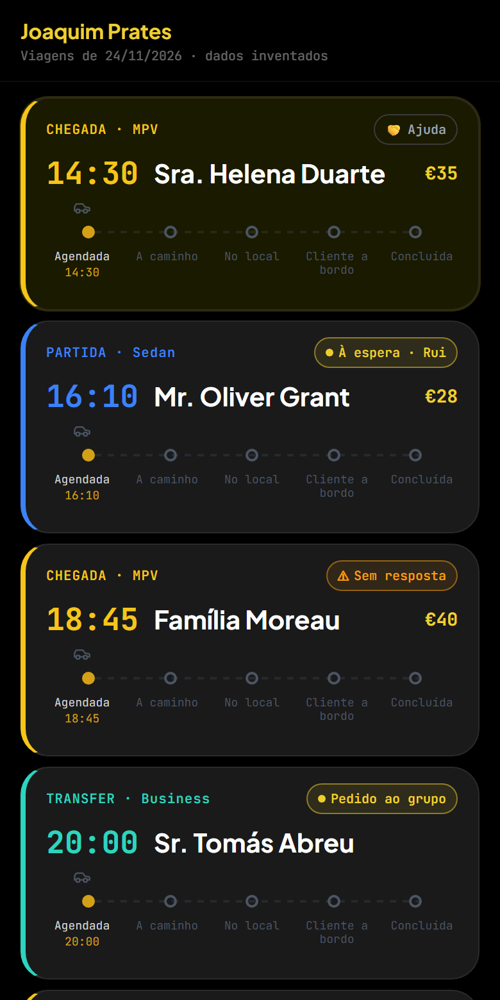
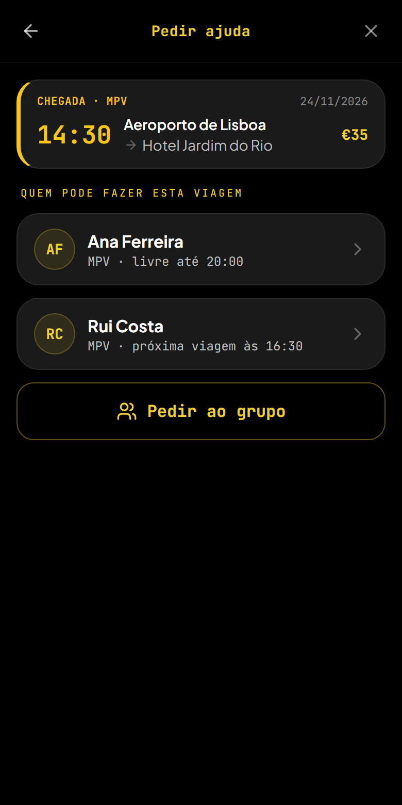
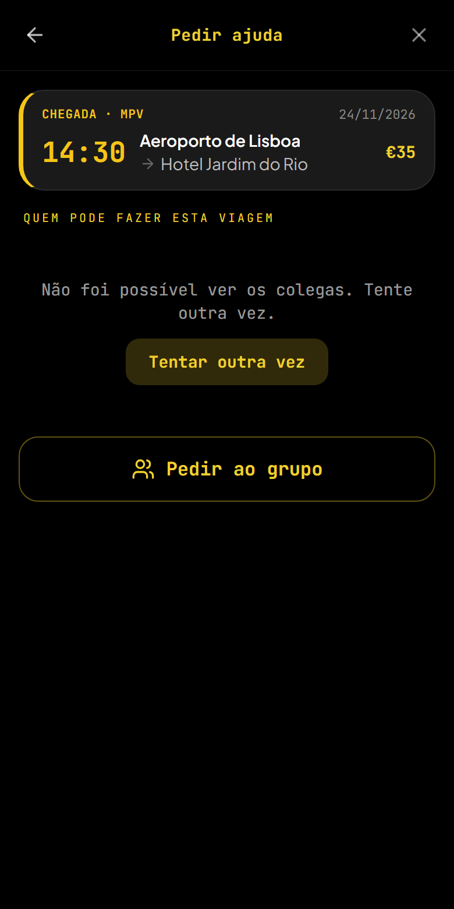
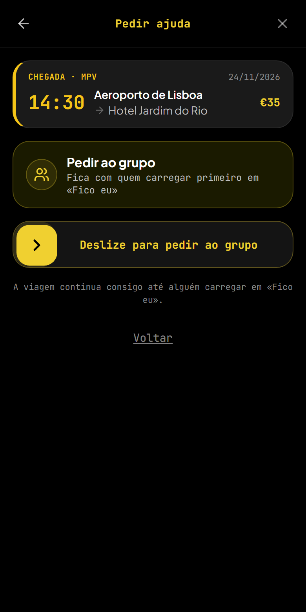
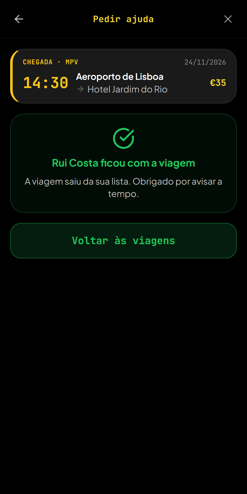
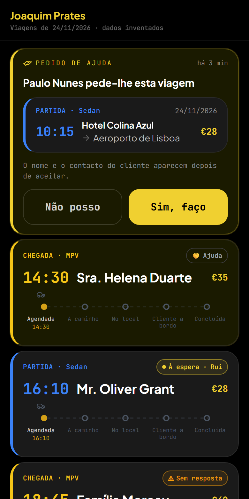
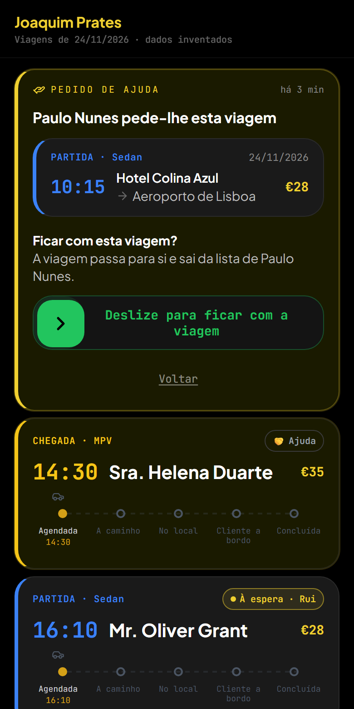
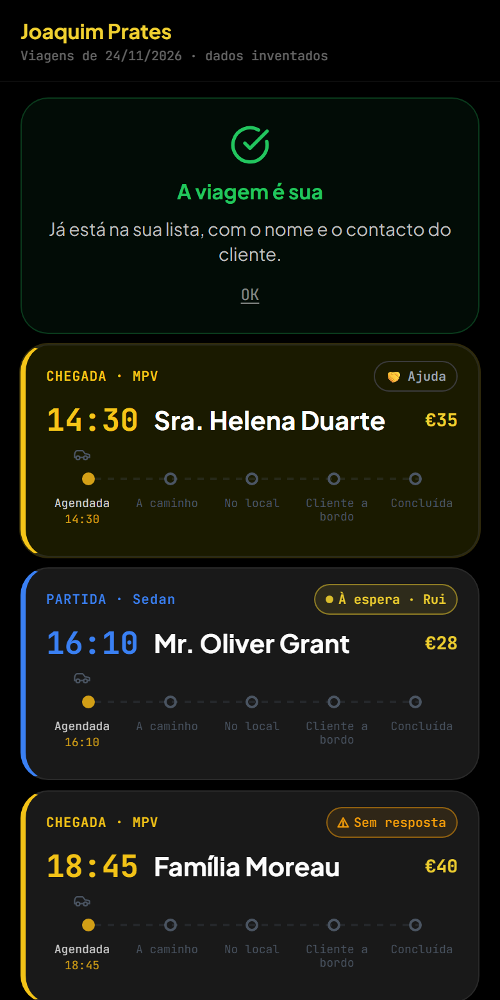
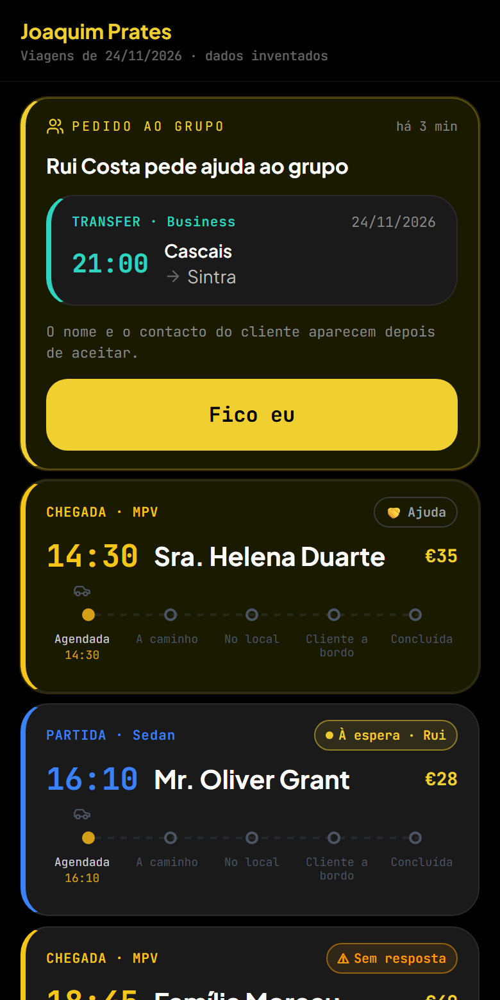

Ramo feature/ajuda-colegas · 23/11/2026 · telemóvel de 390 px. Nomes, viagens, horas e valores são todos inventados.
Para ver ao vivo: npm run dev e abrir /driver/ajuda-demo (só existe em desenvolvimento).
O cartão da viagem
01 · Cartões, todos os estados«Ajuda», à espera, sem resposta, pedido ao grupo, passou para um colega; a viagem acabada não tem botão

01 · Cartões, primeiro ecrãcomo o motorista vê ao abrir

Quem pede
02 · Pedir ajudacolegas possíveis e «Pedir ao grupo»

03 · Nenhum colega possívelsó «Pedir ao grupo»04 · Sem ligaçãotentar outra vez ou pedir ao grupo

05 · Confirmar a deslizarpedido a um colega06 · Confirmar a deslizarpedido ao grupo

07 · À espera do colegacontagem até ao aviso e «Cancelar pedido»08 · À espera do grupofica com quem carregar primeiro em «Fico eu»09 · 15 minutos sem resposta«Pedir a outro colega»10 · Aceitea viagem sai da lista de quem pediu

11 · Recusadovolta à lista, sem esse colega
Quem recebe
12 · Pedido no topo das viagens«Sim, faço» / «Não posso», sem nome nem telefone do cliente

13 · Confirmar antes de ficardeslizar para ficar com a viagem

14 · A viagem é suapassa para a lista, com o cliente

15 · Pedido do grupo«Fico eu»

16 · Outro colega foi mais rápidono pedido ao grupo